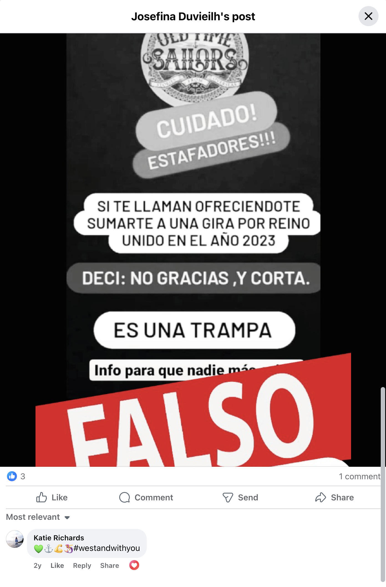

OTS Misinformation
This is an Old Time Sailors (read that as Mr Guzman) Argentinian Facebook post, basically accusing members of the band that have taken Mr Guzman to court in Argentina of lieing about not being paid.
We thought members of the UK public would be interested in this post. Unfortunately, the Argentinian Uilleann Pipe Facebook Group have removed Josefina Duvieilh's post now but the full post is copied below.

So it would seem that Ms Katie Richards is allegedly more than happy to see members of the band being defrauded of their wages?
Note: This is a Google translation in to English of the Spanish Facebook Page.
Musicians and members of Old Time Sailors have an obligation to defend ourselves publicly against the scams that certain people have been circulating on the networks. We are being victims of a group of people who, acting as an illicit association, are doing everything possible to ruin this project where many musicians are involved.
They are using the tool of scratching impunished and unfairly, without presenting any evidence. Many musicians have gone through our project, and as with any large project there is always someone who is dissatisfied and causing problems. But even so most have become conform, having lived a unique experience. We are currently being victimized by a minority, which ironically calls itself the “majority”.
We have resorted to justice, as we have ample evidence in our favor, including signed documents, and fortunately we are moving forward on that front as it should be. They have not gone to justice because they have no evidence in their favor, then instead they abuse the scrap as a social tool to damage our project and our image. Today we want to tell you who these people are so that they are aware and help us spread this message. These people we are going to mention have made countless efforts to destroy us, among these actions we can list:
The people responsible for these acts are by order of relevance and citing their instagram accounts:
We have sent letters documented and cited mediation to all of these people. Obviously they hide and don't appear. We have also filed a criminal complaint, which you can corroborate with these data: Denuncia 962685, fiscalia note tel 52978100 int 8102 o 8147 mpf 569999. We ask you to please circulate this and in case of any doubt, consult us. We have plenty of evidence and we're here to show up, because we have nothing to be ashamed of. On the contrary, we're proud of our project and how far we've come. We are convinced that the biggest motivators behind the intentions of these people are envy, greed, jealousy, and pettiness. We can prove all this case by case, story by story, individual by individual, with extensive evidence, chats, audios, calls, signed documents, and testimonies from many witnesses.
They say they have "many" witnesses, but if you ask them, it turns out that they are people repeating what they heard from someone else. They are not real witnesses. Just people repeating because they “believe their friend”. Please help us fight this injustice, help that there are no people like this, who abuse a resource that real victims of abuse need to defend themselves. We are:
Perhaps the media would like to ask @katieswimsandmakes (Katie) on Instagram whether she would like to comment on the allegations against Old Time Sailors?